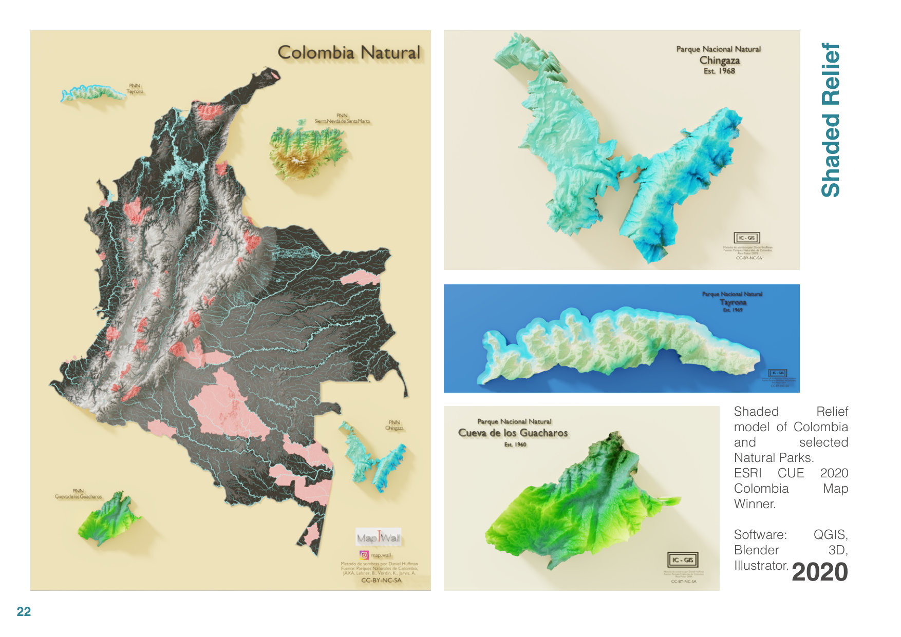

Skills
Geospatial Specialist & PhD Candidate
Digital Twins · Urban Planning · Environmental Impact Assessment
Years Exp.
Clients
Maps Created
About
I am a Geospatial specialist focused on Urban Planning and Environmental Impact. Passionate about mapping usage for territorial solutions, with over 8 years of experience in Territorial Development, Geodatabase structuring, Research, Hydrological modeling, Spatial analysis, Remote Sensing, and Environmental Impact Assessment.
University of Twente — Digital Twins as Enhanced 3D Planning Support Systems
University of Twente — ITC, Enschede
Cum LaudeUniversidad Distrital Francisco José de Caldas
9.3 Final MarkUniversidad de La Salle, Bogotá
Top 7%Experience
Research project on Digital Twins as an enhanced 3D Planning Support System for urban planning.
Developed interactive maps of global manufacturing sites, land use, and biodiversity projects using Mapbox, HTML, CSS, and JavaScript.
Designed a tool for measuring Urban Heat Island and Perceived Body Temperature within a 3D environment. Collaboration between University of Twente and Vrije Universiteit Amsterdam.
Geospatial Consultant providing spatial information management and analysis for multiple clients including Terrasos, Ingema, Geocol Consultores, and Duitama City Hall.
Skills
Portfolio
Interactive dashboards and data visualization projects

A lecture on creating spatial interactive dashboards with Streamlit for geospatial data visualization.
View project
Comprehensive data visualization and analysis of research publications and academic contributions.
View project
Upload a .bib file. Metadata is fetched in batch from CrossRef, OpenAlex, Semantic Scholar, Europe PMC, Unpaywall, DataCite, and CORE (fallback for ResearchGate / Google Scholar indexed papers).
View project
Interactive dashboard modelling hydrogen production, energy flows, and industrial symbiosis networks for the EU Horizon Europe IS2H4C circular economy initiative.
View project
Interactive tool for exploring urban vulnerability hierarchies in deprived settlements via radial dendrogram visualisations with dynamic filtering and data export.
View project
ArcGIS Web App modelling Physiological Equivalent Temperature for the Municipality of Enschede, analysing thermal comfort in relation to urban design, land cover, and climate variations.
View project
ArcGIS Operations Dashboard optimising solid waste collection routes, container saturation monitoring, illegal dumping reports, and fuel-cost analytics for Hatfield, Pretoria.
View project
22 selected maps, 3D visualizations, flood models, and environmental assessments spanning professional, academic, and personal projects (2016–2022).
View projectAchievements
Recognized for excellence in cartographic design and visualization.
Awarded for academic excellence to pursue MSc degree.
Winner for innovative digital twin solution development.
Outstanding research in Geo-information sciences.
Contact
Always open to discussing new projects, opportunities, or collaborations.